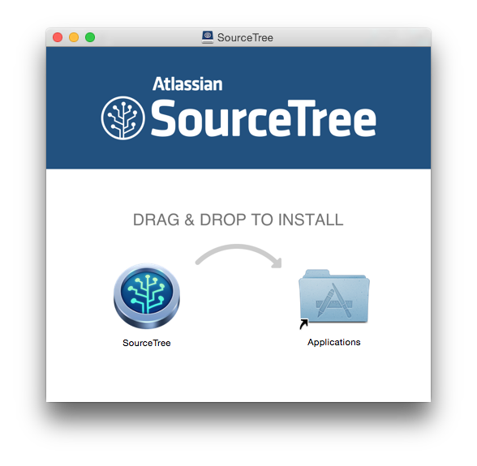

Github入门
Git & Github
Git
Git是一个分布式版本控制工具
Github
Github是一个共享虚拟主机服务，用于存放使用Git版本控制的软件代码和内容项目

Git & Github
- Git是工具
- Github是代码仓库
任务
用git来进行团队协作
今天使用GUI
下载 SourceTree
(点击上图下载)
练习
Step 1
- 设置好SourceTree
打开下载好的文件
打开SourceTree
打开后的界面

Repo URL
HTTPS clone URL
https://github.com/h1994st/Hello-Github.git
添加到SourceTree
点击"Add Repository"
将上页中的"HTTPS clone URL"复制到"Source Path / URL"中

添加后的效果

Step 2
双击打开Repo
修改项目所在文件夹的内容
修改后效果如下：